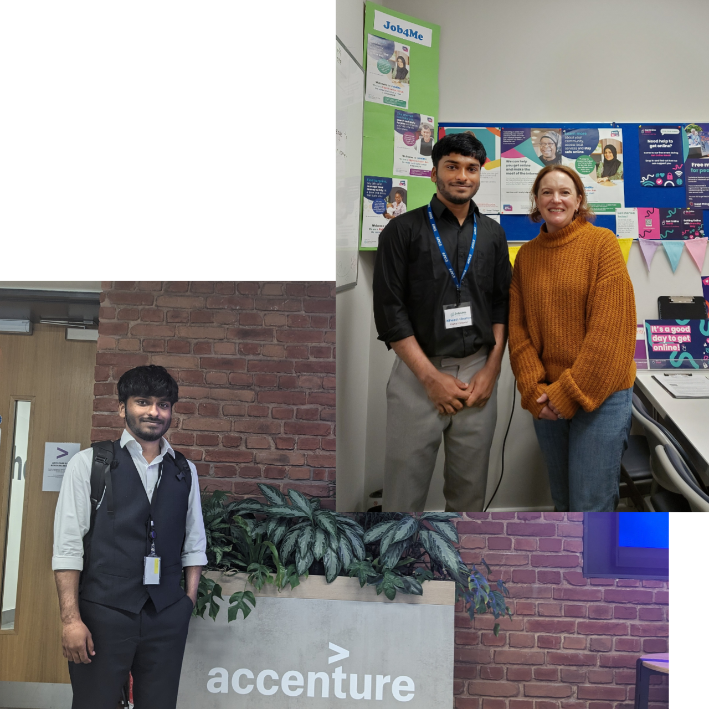
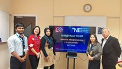
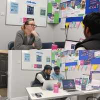
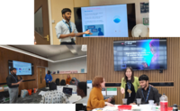
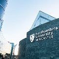

A passionate Software Engineer with expertise in web development,
programming, and data analysis.
Important Note: This is not a fully responsive website, this works
properly only on desktop

Experience
My experience blends front-end development, data management, and
digital accessibility to support inclusive, user-friendly projects.

IT & Admin Facilitator
CICT Newcastle, UK (06/2024 - Present)
At CICT, a learning centre for asylum seekers and refugees in
Newcastle upon Tyne, I joined as a Project Administrator and
discovered their website had been inactive since 2020. Taking the
initiative, I rebuilt and relaunched it, ensuring it stayed current
by regularly adding events and updates. I now manage and maintain
the site using WordPress, JavaScript, HTML, and CSS, ensuring it’s
accessible across all platforms and easy to navigate for a diverse
community. I also collect and organise participant data in line with
GDPR, maintaining accurate Excel records and delivering quarterly
reports with clear visualisations using Power BI and Excel. In
addition, I lead efforts to make the centre more digitally inclusive
by creating simple guides, accessibility checklists, and training
materials to help staff and users engage confidently online.
Digital Inclusion & IT Support Offficer
Job4Me, Gateshead, UK (08/2025 - Present)
I keep our website up to date and easy to navigate, help staff and
clients with everyday tech support and digital skills, create social
media posts that share our stories and successes, and make sure
people can access free devices, data, and online tools so they can
feel more confident using technology.


Good Things Foundation's GetOnlineWeek
Job4Me & CICT, Newcastle, UK (October 2025)
I organised the UK’s largest digital inclusion campaign,
#GetOnlineWeek, leading five events across Job4Me and CICT to help
economically inactive people access digital tools, build online
confidence, and learn to use AI responsibly and effectively showing
that even those with no English or computer skills can engage with
technology through voice or prompts in any language.
Projects
I've worked on various projects, including website development and
data analysis. Some of my favorites are listed in the tabs below.
A recipe application built using JavaScript and a third party API
I developed a fully responsive recipe web application that
integrates with a third-party API of over one million recipes,
allowing users to seamlessly browse, search, and add their own
creations. Built using the MVC architecture, the project
demonstrates clean, modular code with a clear separation between
logic, data, and design, resulting in a fast, scalable, and
easy-to-maintain application.
A web application that makes Online banking simpler
This is a banking web application I built during a Udemy course. It
includes four users with different balances and transactions. The
app features a simple login with initials and a PIN. Users can
transfer money, with real-time updates for both sender and receiver.
They can also request loans if they’ve previously received at least
10% of the requested amount. Additionally, users have the option to
manage their accounts.
UK Crime Data Analysis: Trends & Insights
This project explores crime trends across the UK using big data
processing with PySpark and time series analysis. It examines crime
categories, tracks yearly fluctuations, and analyzes the impact of
events like the COVID-19 lockdown on crime rates. The analysis
provides data-driven insights through visualization and statistical
decomposition.
Education & Training Courses
This slider gives a quick look at the degrees and training courses
I’ve completed along the way in my career.
MSc Advanced Computer Science
01/2023 - 06/2024
I earned an MSc in Advanced Computer Science with a 2:1 from
Northumbria University, gaining expertise in advanced programming,
databases, machine learning, big data, cloud computing, research
methods, and project management. This program enhanced my
technical skills and problem-solving abilities in modern computing

Northumbria University
Newcastle, UK
BE Computer Science
09/2018 - 07/2022
I completed a BE in Computer Science with 79%, gaining a strong
foundation in data structures, algorithms, operating systems, and
mathematics. This program honed my analytical and problem-solving
skills in software development and computing
University College of Engineering, Panruti
Tamilnadu, India
JavaScript Master Course
01/2025 - 06/2025
Through this course, I mastered the core concepts of JavaScript,
including control flow, loops, functions, and modern data
structures such as arrays, objects, and maps. I gained hands-on
experience in DOM manipulation, event handling, and asynchronous
programming using Promises, async/await, and AJAX to build
responsive and interactive web applications.
Udemy
Tamilnadu, India
A quote that helped me overcome my procrastination: "No one is ready
to listen to your story until you win."